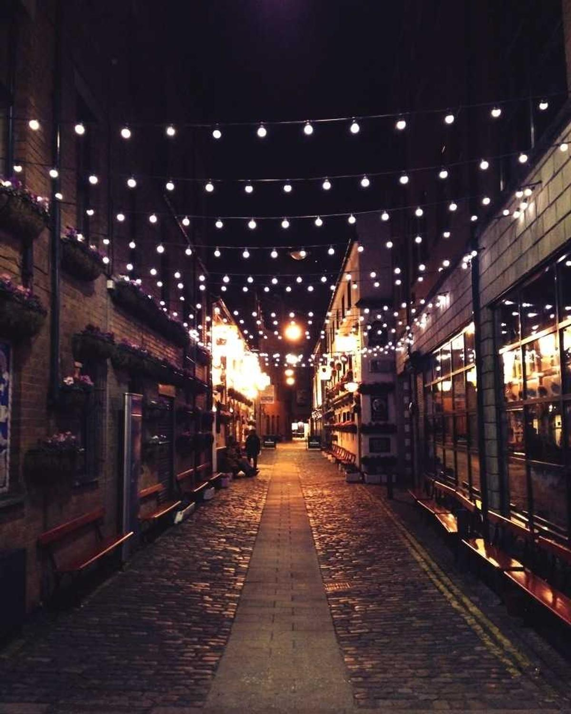

夜风 NIGHTWIND
夜里起风的时候，代码还在跑。一个人，五十个仓库，一条不外包的交付线。 The wind picks up at night. The code keeps running. One person, fifty repositories, one line nobody else ships.
看交付记录See the record交付记录The record
- repayment-verification-system 全栈 · Vue3 + NestJSFull stack · Vue3 + NestJS 2026
- boxim 即时通讯 · 多端Messaging · multi-client 2026
- autoclip AI 视频 · 一键出片AI video · one link, one cut 2026
- second-brain RAG 知识库 · 私有化RAG knowledge · self-hosted 2026
- agent-skills Agent 工具链 · 可复用技能Agent toolchain · reusable skills 2026
- wav2lip-cpu-lipsync 数字人 · 2C4G 可跑Talking head · runs on 2C4G 2026
- lexiangim IM 品牌线 · 部署IM brand line · deploy 2025
- 728-platform 游戏平台 · Cocos + NodeGame platform · Cocos + Node 2025
五十个仓库，一半在跑，一半在等下一次风起。 Fifty repositories. Half of them running, the rest waiting for the next gust.

从一句话到上线Sentence to shipped
不写幻灯片，不排期三个月。先让能跑的东西出现在屏幕上，再让它在真实流量里活下来。每一步都有能验收的东西，每一段都能单独回滚。 No decks, no three-month plan. Get something running on a screen, then keep it alive under real traffic. Every step ships something you can check, and every step rolls back on its own.
交付单 · 一张One slip · delivery
第一天Day one
拆需求，定边界Split the ask, fix the edges2h
技术选型，确认不重复造Pick the stack, nothing rebuilt3h
第一周Week one
可点的原型，真数据Clickable prototype, real data5d
前后端打通，跑在你机器上Wired end to end, on your machine4d
视觉走查，定 tokenVisual pass, tokens fixed2d
之后After
部署、备份、回滚演练Deploy, back up, rehearse rollback1d
你拿到：一个能自己跑的系统 · 合计 14 天You hold: a system that runs itself · 14 days total
夜风，一个人写代码的地方。白天接交付，夜里做自己的东西，所以名字里有个“夜”。 做过全栈交付，从 Vue3 前台到 NestJS 后台；也做过多端 IM，让同一条消息在 App、H5 和桌面同时到达。 后来开始往视频流水线走：把长视频切成短视频，把一张照片变成会说话的人，而且要在2C4G 的便宜服务器上跑得动。 最近两年大半时间花在Agent 工具链和 RAG 知识库上，让机器替人记住更多、少问几遍。 五十多个仓库摆在那里，大部分没有 star，但它们都在某个客户的生产环境里跑着。 有事的话，往下滚到底。
Nightwind is one person, one desk, one terminal. Days go to client work, nights to his own builds. He has shipped full-stack delivery from Vue3 front ends to NestJS back ends, and multi-client messaging where one message lands on app, web and desktop at once. Then came video pipelines: long clips cut into shorts, a still photo turned into someone talking, all of it running on a two-core box that costs nothing. The last two years went mostly into agent toolchains and RAG knowledge bases, teaching the machine to remember more so nobody has to ask twice. Fifty-some repositories sit there, mostly without stars, most of them running in somebody's production. If you need something, keep scrolling.
在做的事Working on 交付 · 视频 · AgentDelivery · Video · Agents
时区Time zone UTC+8 · 夜里在线online at night